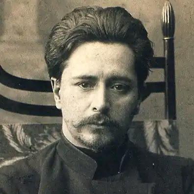
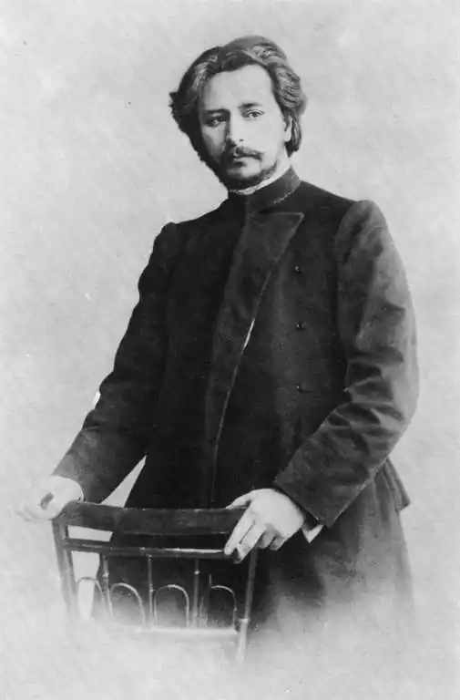

АНДРЕЄВ, Леонід Миколайович (Андреев, Леонид Николаевич — 09.08.1871, Орел — 12.09.1919, с. Нейвала, Фінляндія) — російський прозаїк і драматург.Андреєв народився 9 серпня 1871 р. в сім'ї приватного землеміра Миколи Івановича Андреева та дочки збіднілого польського поміщика Анастасії Миколаївни (дівоче прізвище Пацковська). Дитячі та юнацькі роки Андреєва проминули в батьківському домі, а в 1882 р. його віддали в орловську класичну гімназію, де він був (за власним зізнанням, вчився "погано") дев'ять років. У 1889 р. помер батько майбутнього письменника, і сім'я почала бідувати. "Отроцтво та юність — дуже сумні. З 15 років я почав дошукуватися справжньої мети життя, справжньої дружби, справжнього кохання. Я шукав, а життя у відповідь давало мені життя. Довго, дуже довго я плутався в добрі та злі... Помер батько — бідність, потім брудні, нестерпні злидні. Час був поганий — початок дев'яностих років. Почав я сильно запивати. Інколи впадав у відчай; якось спробував застрелитися — не вдалося... " — писав у 1903 році в одному з листів Андреєв.
Проте, попри всі життєві негаразди, майбутній письменник, закінчивши гімназію, у 1891 р. вступив на юридичний факультет Петербурзького університету, але зміг провчитися там лише два роки, оскільки його виключили "за невнесення плати". Перевівшись у Московський університет, Андреєв несподівано отримав "подарунок" — Товариство допомоги нужденним сплатило його навчання. Вчитися було важко, тому що постійно не вистачало грошей. Андреєв давав приватні уроки, малював на замовлення портрети. У 1892 р. під псевдонімом Л. П. (ймовірно, Леонід Пацковський) Андреєв заради заробітку у журналі "Звезда" опублікував перший твір — оповідання про бідного студента "В холоді та золоті".
Проте початок літературної кар'єри Андреєва припадає на 5 квітня 1898 року, коли в газеті "Кур'єр" було опубліковане його оповідання "Баргамот і Гараська", яке тепло зустрів Максим Горький, оскільки тематично було близьке йому — тема знедоленої, кинутої на дно життя людини, п'яниці та бродяги. На той час Андреєв, ставши після закінчення університету кандидатом права, працював помічником присяжного повіреного, виступаючи водночас автором фельєтонів (псевдонім Джеме Лінч) і судових репортажів. Тему "зневажених і скривджених" Андреєв продовжив і в наступних своїх оповіданнях — "Петька на дачі" ("Петька на даче", 1899) й "Ангелятко" ("Ангелочек", 1899), героями яких виступають діти. Глибоким гуманізмом проникнуті оповідання "Гостинець" ("Гостинец") і "У підвалі" ("В подвале", 1901). У 1901 р. видавництво "Знання" на кошти Максима Горького видрукувало першу книжку Андреєва — "Оповідання" ("Рacсказы"), а вже через рік почало виходити зібрання творів письменника, заприятелював він у цей час і з Горьким. У 1902 р. Андреєв писав до К. Чуковського: "Мені не важливо, хто "він" — герой моїх оповідань: піп, чиновник, добряга чи худобина. Для мене важливо лише одне — що він людина і як така терпить одні й ті самі злигодні життя. Більше того, в оповіданні "Кусака" героєм є собака, тому що все живе має одну душу, все живе страждає спільними стражданнями і у великій безликості та рівності зливається воєдино перед грізними силами життя". Творчість Андреєва, з її трагічним світосприйняттям, новизною проблематики та поетики, оригінальністю світобачення, створила йому репутацію одного з найкращих письменників Росії.Про нього писали не лише в Москві та Петербурзі, а й у Києві та Харкові, Одесі та Житомирі. В Україні вийшли друком і перші книги про письменника (Н. Геккер. Л. Андреев и его произведения. — Одеса, 1903; И. Баранов. Л. Андреев как художник, психолог и мыслитель. — К., 1907). У 1908 та в наступні роки у Чернівцях, Кам'янець-Подільську та Коломиї побачили світ збірки оповідань, окремі твори Андреєва у перекладі українською мовою. Для першого періоду творчості письменника, який завершується повістю "Життя Василя Фівейського" ("Жизнь Василия Фивейского", 1903), характерні кілька магістральних тем — тема всезагальної невлаштованості та передчуття майбутньої катастрофи ("Утемну далечінь", "Дзвін на сполох"), роз'єднаності та самотності сучасної людини ("Місто", "Великий шлем", "Наріці", "Чужоземець", "Жили-були"), божевілля та смерті ("Думка", "Життя Василя Фівейського", "Примари "). Одним із найзначніших творів Андреєва раннього періоду творчості є, безумовно, повість "Життя Василя Фівейського", де в образі сільського священика зображено біблійного Йова наших днів. Уся тогочасна критика відзначала, що твір написаний із видатною силою, а основна думка проведена з надзвичайною художньою енергією. І окремі місця, як, приміром, опис зимової заметілі, і непевна тривога, що охоплює наприкінці повісті село, і загальне враження пригнічують і "передають" читачеві авторський жах. "Жахливим" було все життя Василя Фівейського, на "некрасиву, кучеряву голову" якого зі "зловісною і таємничою навмисністю стікалися біди": втопився син, запила з туги, а потім згоріла під час пожежі дружина; залишилася лише дочка-дегенератка і наймолодший син — злісний ідіот. Проте для головного героя кожне нове лихо — ще один привід повторити "яскраві, наче небесний вогонь" слова: "Я — вірю!" З часом Василю Фівейському починає здаватися, що він богообраний і покликаний полегшити людські страждання. Невдала спроба воскресити померлого бідняка завершується безтямною втечею героя та його смертю. У "Василеві Фівейському", як і в попередніх оповіданнях письменника "Брехня", "Стіна", Андреєв використовує експресіоністські художні засоби з тим, щоб якнайповніше розкрити свою "концепцію людини: вона нікчемна у порівнянні із Всесвітом. Не існує даного небом смислу її життя. Похмурою є і дійсність, що оточує її, але, осягаючи це, людина не стає покірною" (К. Муратова). З приводу цієї повісті та й свого бачення життя взагалі збереглася думка самого Андреєва: "Якщо не в цьому житті, то в іншому, обіцяному, Бог повинен відповісти на корінні запити про справедливість і смисл. Якщо найбільш "покірному", якнайпокірнішому, який прийняв життя, яким воно є, і благословив Бога, довести, що в іншому світі буде, як тут: урядники, війна, несправедливість, безневинні сльози — він відмовиться від Бога". Новий період творчості Андреєва розпочався оповіданням "Червоний сміх" (1904), навіяним кривавими подіями російсько-японської війни. Головний герой твору — Червоний сміх, що запанував на землі, і цей абстрактно-символічний образ проходить через увесь твір, у якому, за влучним зауваженням С. Венгерова, "немає жодного власного імені, немає жодного конкретного змісту, а лише ряд безформних відчуттів, яскравих плям, непевних звуків, несвідомих душевних порухів і, найголовніше, галюцинацій". У цілому байдужий до політики, Андреєв у лютому 1905 р. був ув'язнений у камеру-одиночку Таганської тюрми за надання своєї квартири для засідань ЦК забороненої тоді РСДРП. Письменник провів там 17 діб, поки не був звільнений під заклад, внесений Савою Морозовим. У творчості аполітичність Андреєва проявилася перш за все в цілковитій об'єктивності зображуваного. Це стосується таких його творів, як оповідання "Губернатор" (1905), стилізованої алегорії "Так було" (1905), п'єси "До зірок" (1905), "богоборчої" драми "Совя"(1906), в якій письменник створив схематизовану узагальнену картину життя людини від народження до смерті, та ін. Значне місце у творчості Андреєва початку XX ст. займає драматургія. Починаючи з 1906 p., він написав три соціально-побутові "Дні нашого життя"("Дни нашей жизни", 1908), "Анфіса" (1909) і "Gaudeamus" (1910), а також чотири символічні п'єси — "Життя людини" ("Жизнь человека", 1906), "Чорні маски" ("Чёрные маски", 1907), "Анатема"(1909) і "Океан"(1910). Символічним п'єсам письменника притаманні гранична узагальненість, т. зв. "примітивна" символічність, схематичність у змалюванні персонажів. Прикметною у цьому плані є п'єса "Життя людини", написана восени 1906 р. і удостоєна премії ім. О. Грибоедова. Все "Життя людини" де поєдналися гротеск, гіпербола й антитеза, навмисно написане "абстраговано і стилізовано саме на кшталт старих лубків: людина народжується, має спочатку успіх, потім її переслідують лиха, смерть рідних і т. д. У стилі тих самих примітивів у всіх діючих осіб немає імен, а наявні лише Друзі людини, Вороги людини та інші наївні персоніфікації старих лубків" (С. Венгеров). Поряд із п'єсами у ці роки Андреєв пише й оповідання, найзначнішими з-поміж яких є "Іуда Іскаріот", де виведений складний психологічний образ зрадника, який і любить, і ненавидить свого вчителя, та "Пітьма" головний герой якої — терорист Олексій переховується від поліції у публічному домі. Основна ідейна спрямованість "Пітьми" сконцентрована у тості Олексія: "За нашу братію! За падлюк, за мерзотників, за боягузів, за розчавлених життям... За всіх сліпих з народження... Якщо нашими ліхтариками не можемо освітити всю пітьму, то загасимо ж вогні і всі поліземо у пітьму... Пиймо, темното!" До числа найкращих творів про смерть у світовій літературі критика відносить оповідання Андреєва "Єлезар", написане ним у 1906 році. У 1911 р. Андреєв створив роман "Сашко Жигульов", у якому головний герой — син генерала, гімназист Сашко Погодін збирає розбійницьку ватагу і під прибраним ім'ям Сашка Жигульова громить поміщиків. Роман негативно оцінив Максим Горький ("дещо надмірний пафос і перевантаженість психологією", тлумачення фактів "штучне, не живе", стиль "солодкуватий і холодно сентиментальний"), що спричинило остаточний розрив до того дружніх стосунків між ними. Першу світову війну Андреєв сприйняв як "боротьбу демократії всього світу з цезаризмом і деспотією, представником якої є Німеччина", а пізніше захоплено вітав Лютневу революцію у Росії та повалення самодержавства, але до перемоги більшовиків у Жовтневій віднісся різко негативно ("по калюжах крові йде завойовник Ленін"). Яскраво і гостро він висловив своє ставлення до більшовицької диктатури у публіцистичній статті "S. О. S." (1919). Після проголошення незалежності Фінляндії, де Андреєв жив на своїй дачі, він опинився в еміграції. Самотній (дружина Олександра Михайлівна Велінгорська померла після пологів з другим сином), хворий, Андреєв пішов із життя 9 грудня 1919 року від паралічу серця.